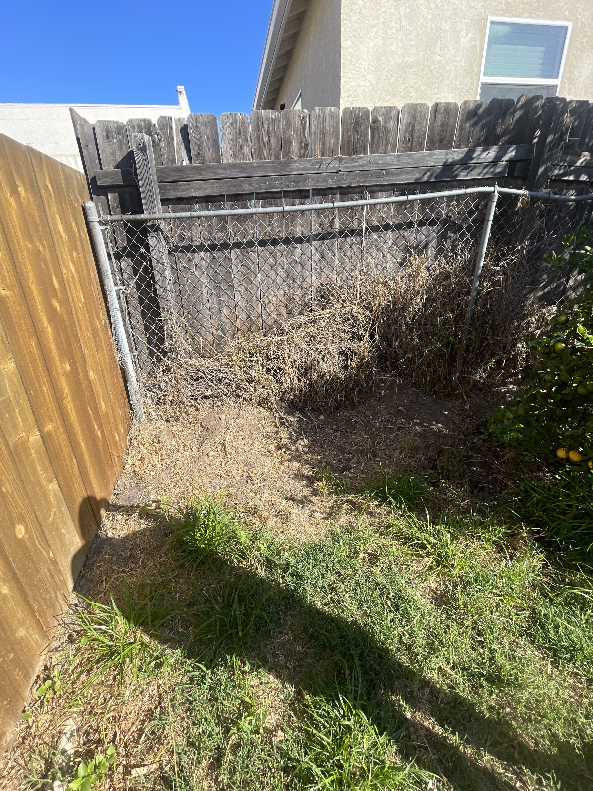
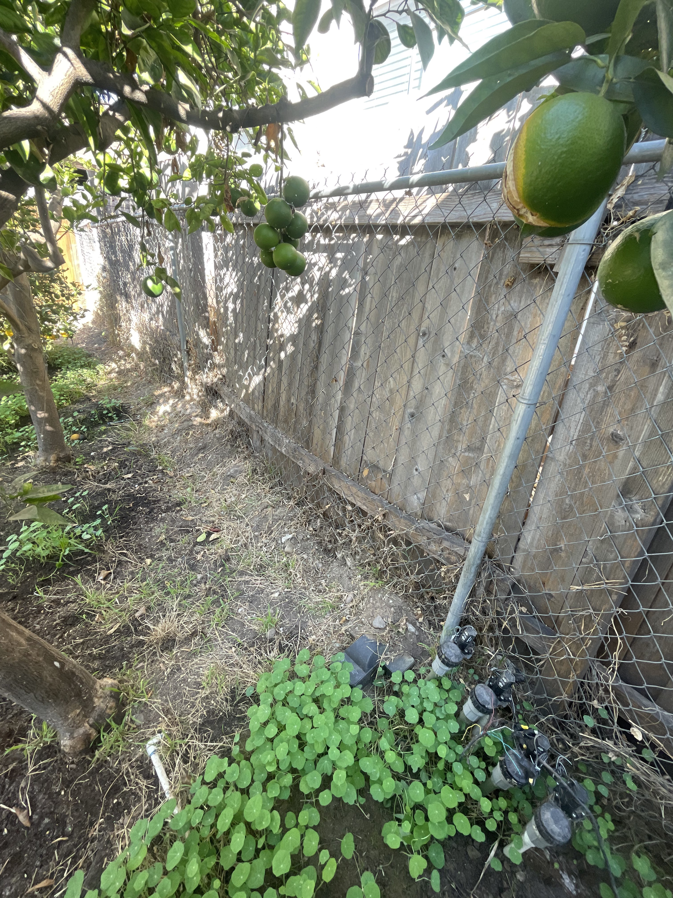
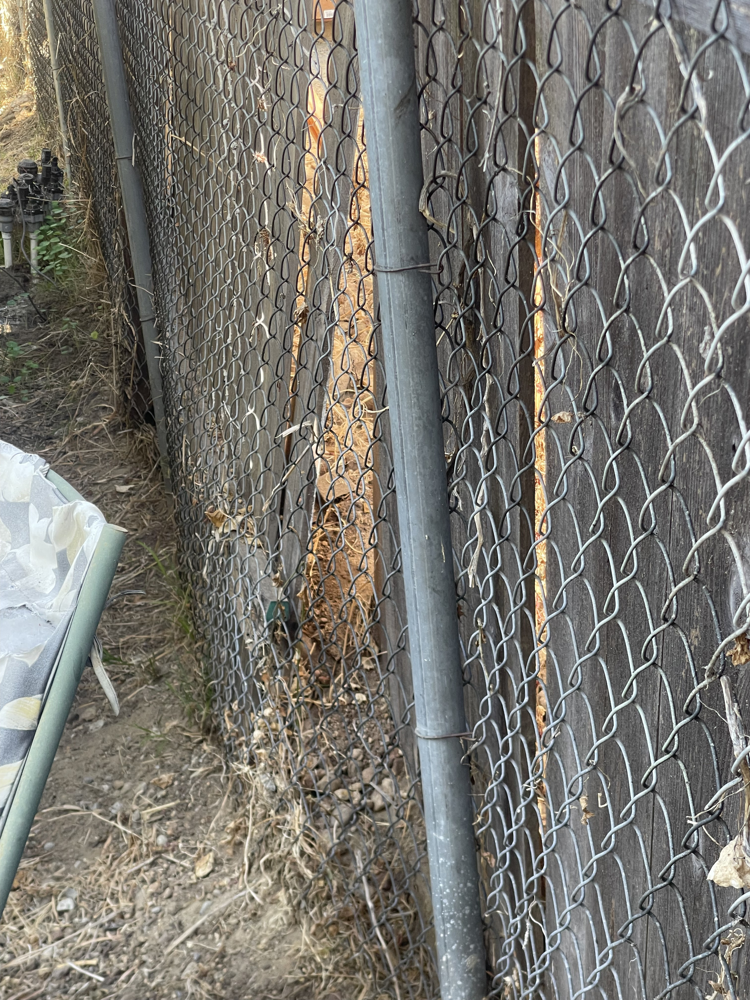
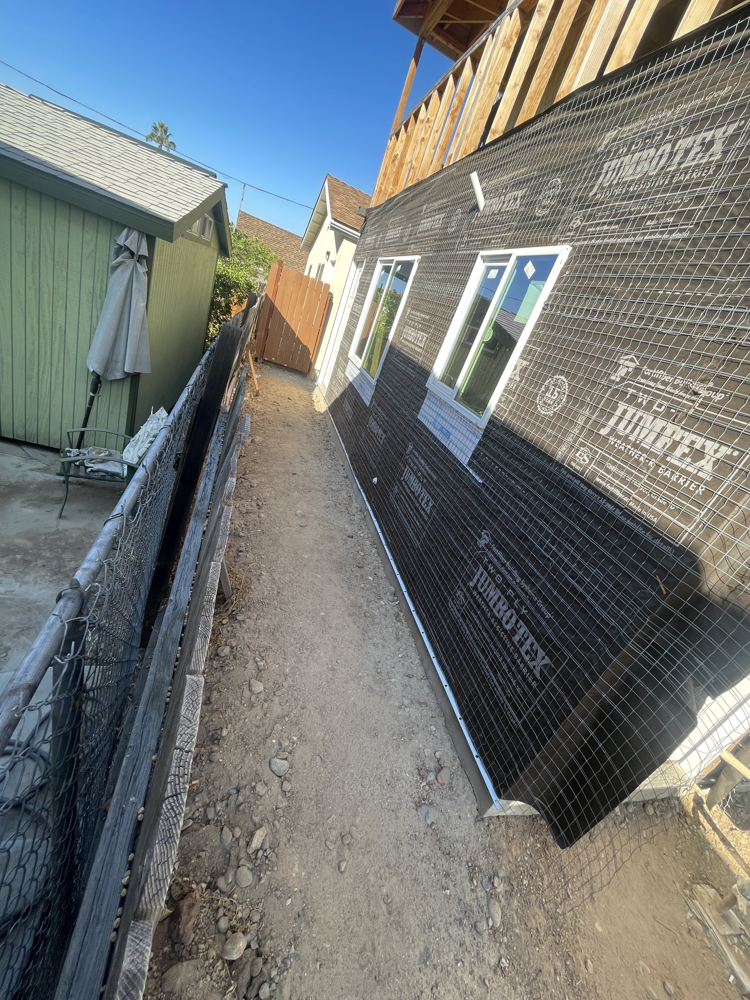
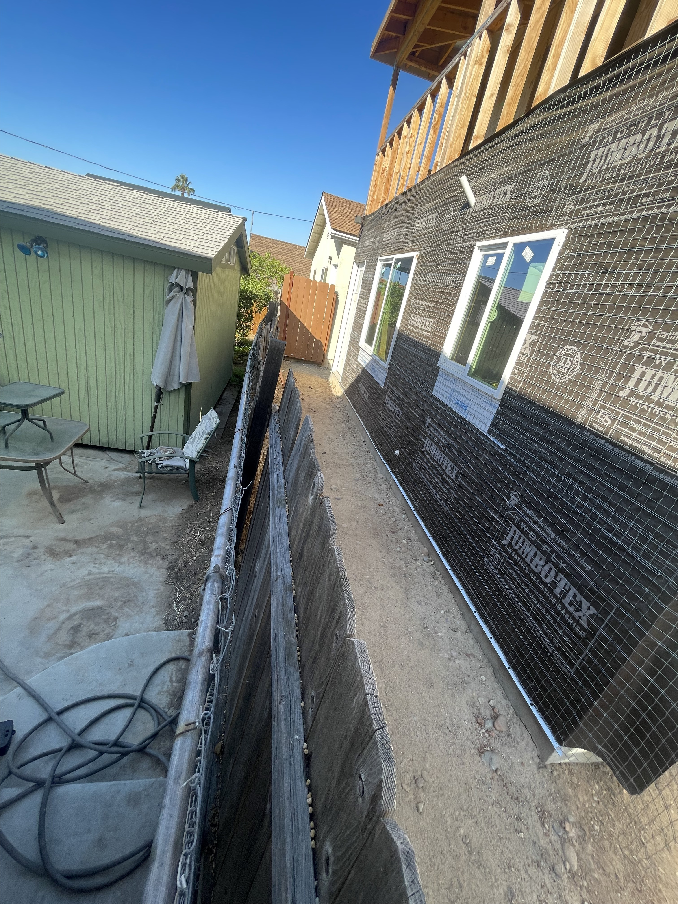
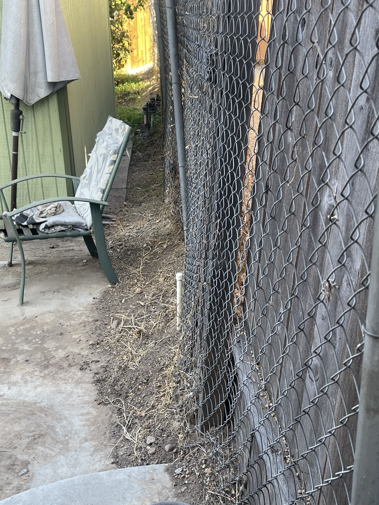
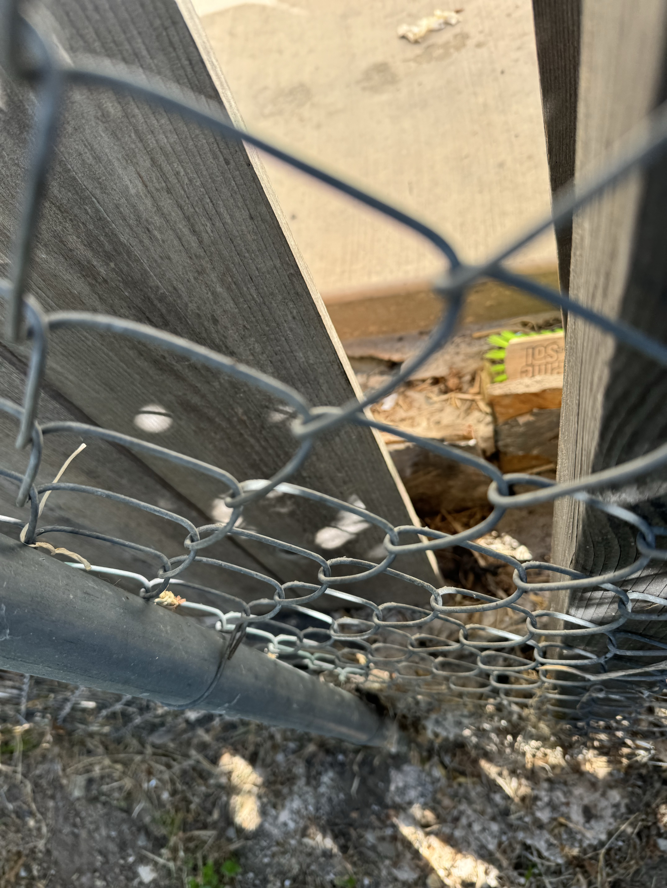
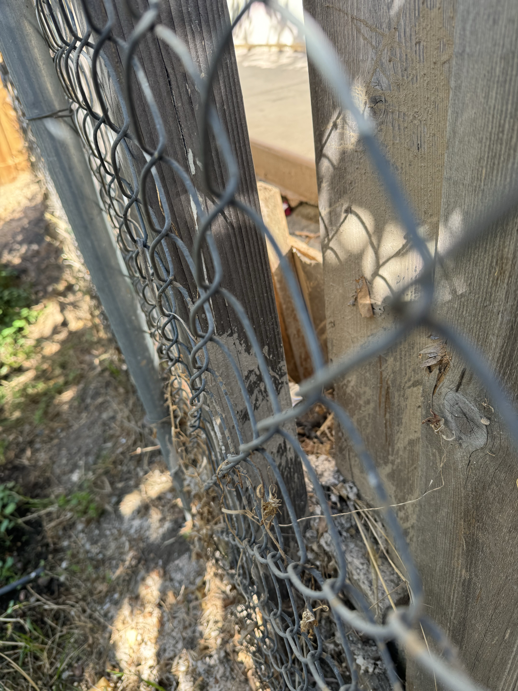
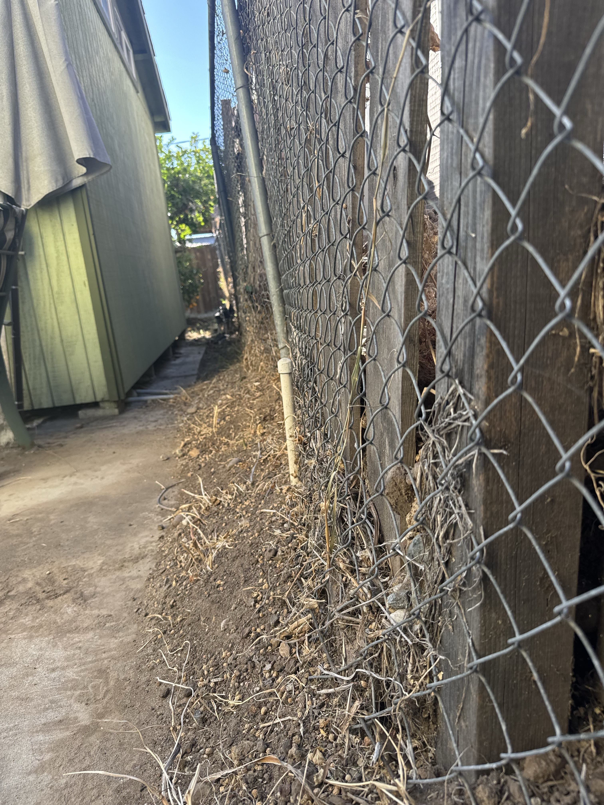
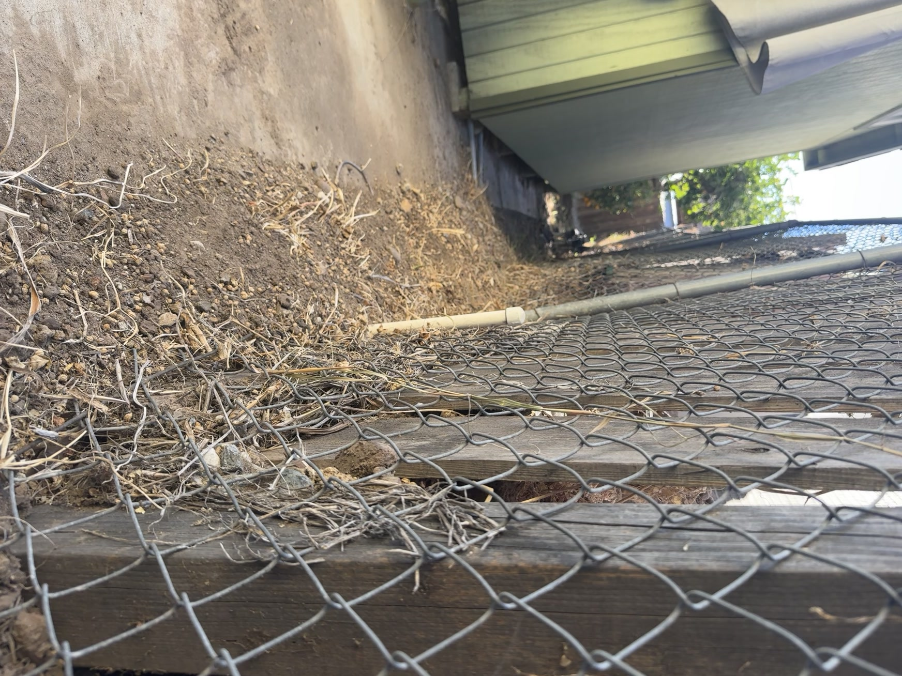

Photographic Exhibits
Chain of custody: All photographs were captured by Rob Logic, owner of 4852 & 4854 Palm Avenue, on his personal iPhone. Each file carries unaltered EXIF metadata including the original capture date, capture time, and GPS coordinates. All nine files were taken at or within a few feet of 32°46'01"N · 117°01'10"W, which plots to the shared property line between 4854 Palm Ave (Rob's parcel, APN 4942510600) and 4862 Palm Ave (Salameh's parcel, APN 4942510500).
The original unmodified files are preserved at /Volumes/PeachDrive/.../palm-ave-dispute/evidence/photos/ with original filenames intact. The copies presented below have been rotated 90° clockwise (to correct the EXIF "Rotate 90 CW" orientation flag from camera-portrait capture) but are otherwise unaltered.
Exhibit 01 — 2024-10-13 · 09:47:12 PDT

Rear-yard corner view. Tall wood perimeter fence (left), sagging chain-link fence at the shared line with Salameh (center, with bowed top rail), and Salameh's completed-stucco multi-story structure rising behind. Dried vegetation pressed into and through the chain-link from Salameh's side.
Evidentiary value: Proximity of the new multi-story structure to the shared property line; displacement of the chain-link top rail; vegetation encroachment from Salameh's side.
Source file: E8ADB202-0FD3-404C-9273-E0C57EAB87B0.jpeg · 4032 × 3024 · Apple iPhone 12 Pro Max · EXIF Orientation "Rotate 90 CW"
Exhibit 02 — 2024-10-13 · 09:47:46 PDT

Citrus tree (lime) in Rob's yard overhanging the shared property line. Chain-link fence with dislodged horizontal rail against weathered wood backing. Nasturtium ground cover at base; irrigation valve at fence post.
Evidentiary value: Vegetation and landscape improvements on Rob's side at risk from the fence condition and adjacent construction; structural damage to the fence (horizontal rail displaced).
Source file: ADB96CA4-61E3-47E8-B319-9B10595145B6.jpeg
Exhibit 03 — 2024-10-13 · 09:49:26 PDT

Close-up through the shared chain-link. A length of fresh, unfinished dimensional lumber is pressed against — and appearing to push through — the fence from the Salameh side. Fresh wood contrasts with the weathered existing wood fence boards.
Evidentiary value: Construction material encroaching on and physically loading the shared fence from Salameh's side; direct evidence of contact/pressure at the shared property line.
Source file: IMG_0012.jpeg
Exhibit 04 — 2024-10-13 · 09:50:45 PDT

Wide view along the shared line as of 2024-10-13. Salameh's multi-story structure wrapped in Jumbotex 2-ply weather-resistive barrier with stucco lath applied but no stucco yet. Raw earth strip with cobbles between structures. Broken wood fence planks and fallen chain-link lying on the ground on Rob's side. Rob's green outbuilding partially visible at bottom. Construction has since been completed; the site conditions depicted (no retaining wall, collapsed fence, uncontained fill at slab edge) persist.
Evidentiary value: (a) Construction documented in progress during 2024 (with B21-885-REV-01 subsequently "Finaled" 1/5/2026 per the La Mesa portal); (b) no retaining wall of any kind at the shared line; (c) character of the fill (loose, cobble-laden, uncompacted) visible at the slab edge; (d) complete collapse of the shared fencing on Rob's side.
Source file: IMG_0013.jpeg
Exhibit 05 — 2024-10-13 · 09:51:00 PDT

Patio-level view as of 2024-10-13. Rob's concrete patio, green outbuilding, patio furniture and hose (LEFT); Salameh's multi-story structure in house wrap + lath (RIGHT), with a third-story wood-framed level under construction visible above. At center: a makeshift plywood/OSB barrier installed along the property line — standing in for a retaining wall — with raised fill behind it on Salameh's side visibly above the level of Rob's concrete patio. Construction has since been completed; no engineered retaining wall has been added.
Evidentiary value — KEY EXHIBIT:
- Clear grade differential between Salameh's fill (higher) and Rob's concrete patio (lower).
- Absence of any engineered, permitted retaining wall at the shared property line — only a plywood/OSB stopgap whose adequacy under LMMC §24.05.030(I)(6) and CBC §105.2 exception 3 is facially deficient.
- Proximity of the new three-story structure to Rob's patio — visible third-story wood framing in progress.
Source file: IMG_0014.jpeg
Exhibit 06 — 2024-10-13 · 09:51:22 PDT

Patio-edge view along the fence line. Dirt and dry vegetation from Salameh's raised grade have spilled down under and through the chain-link onto the edge of Rob's concrete patio. Wrought-iron patio chair and closed umbrella in the background on Rob's side.
Evidentiary value: Direct photographic confirmation of Rob's factual claim that "fill material is migrating from beneath the edge of the applicant's concrete slab onto my parcel." Matches the complaint letter's Grievance I.
Source file: IMG_0015.jpeg
Exhibit 07 — 2024-10-13 · 09:54:15 PDT

Extreme close-up of a shared-line fence post. A freshly-cut piece of dimensional lumber (bright, unweathered) is visible between the fence boards on Salameh's side, bearing a neon-green stud-grade tag. Sawdust and construction debris on the ground below the fence.
Evidentiary value: Active construction material and debris at the shared line from Salameh's side; sawdust on Rob's side as debris migration evidence.
Source file: IMG_3512.HEIC · 5712 × 4284 · iPhone 15-generation camera
Exhibit 08 — 2024-10-13 · 09:55:00 PDT

Companion close-up showing the fence post at another angle, with fresh cut wood visible behind the weathered post and chain-link distortion.
Evidentiary value: Reinforces Exhibit 07 from a different angle. Documents fence-post damage and recent cut-wood contact at the shared line.
Source file: IMG_3514.HEIC · 5712 × 4284
Exhibit 09 — 2024-09-27 · 16:32:21 PDT (separate site visit, ~16 days earlier)

Narrow corridor between Rob's green outbuilding (left) and the damaged chain-link fence on the shared line (right). Wood fence posts visible as support framework; chain-link sagging. Dirt and debris accumulation along Rob's side of the fence line. Photographed approximately 16 days before Exhibits 01-08.
Evidentiary value: Demonstrates that the condition complained of is continuous and ongoing, not a single momentary event. The photographs of 10/13/2024 are not isolated; the same fence condition, dirt accumulation, and proximity existed at least 16 days prior.
Source file: IMG_3464.HEIC
Exhibit 09B — 2024-09-27 · 16:32 PDT · Live Photo keyframe

Keyframe extracted from the Live Photo video companion of Exhibit 09 (IMG_3464.MOV). Low-angle, near-ground perspective showing the shared fence line in cross-section: raised fill on Salameh's side (LEFT), a chain-link fence bottom rail pushed over and pinned flat by the weight of the fill (CENTER), and loose dirt and vegetation spilling over the crushed fence onto Rob's side (RIGHT).
Evidentiary value — THE key cross-section shot.
- Shows the physical mechanism of the §832 lateral-support violation: the fence at the property line has been physically deformed and crushed by the weight of Salameh's raised fill.
- Shows dirt migrating directly across and over the (crushed) fence onto Rob's property.
- Dated September 2024 — establishes that the condition long pre-dates today.
- More compelling than any still photograph in the set for Grievance I (grading / fill / loss of lateral support).
Source: keyframe extracted from IMG_3464.MOV (Live Photo companion, 1920 × 1440, 29.5 fps, 1.97 sec). Frame at t=0.8s. The companion MOV is preserved on PeachDrive as exhibit-09-live-20240927-163221-original.MOV.
Gaps / Still needed
- Photograph(s) dated during or immediately after the storm event (basement flooding, orange tree fall) — currently undocumented photographically.
- Photograph(s) of the sewage-pump discharge event — currently undocumented photographically.
- Photograph(s) of the unshielded exterior lights illuminated after dark — not yet captured.
- Measured photograph with tape or other scale reference showing the exact height of the grade differential.
Compiled 2026-04-16. Chain-of-custody statement should be affirmed by Rob in a short declaration before the photographs are submitted to any agency or court. This is general regulatory information, not legal advice.